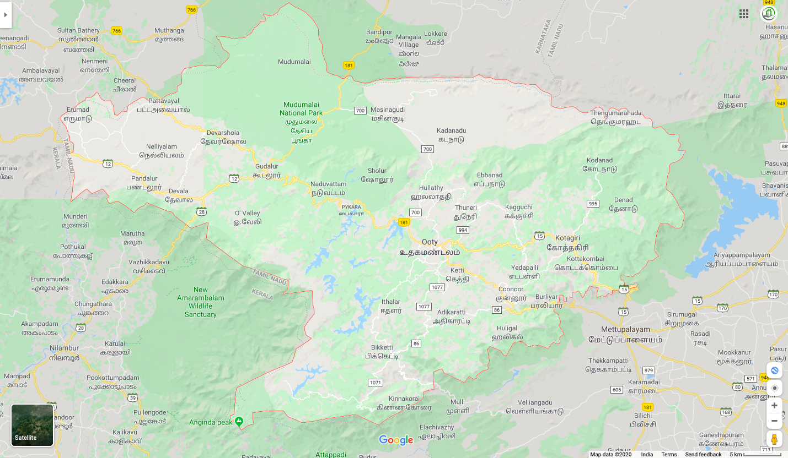

Numbers 33:51-56 51"Speak to the Israelites and say to them: 'When you cross the Jordan into Canaan, 52drive out all the inhabitants of the land before you. Destroy all their carved images and their cast idols, and demolish all their high places. 53Take possession of the land and settle in it, for I have given you the land to possess. 54Distribute the land by lot, according to your clans. To a larger group give a larger inheritance, and to a smaller group a smaller one. Whatever falls to them by lot will be theirs. Distribute it according to your ancestral tribes. 55"'But if you do not drive out the inhabitants of the land, those you allow to remain will become barbs in your eyes and thorns in your sides. They will give you trouble in the land where you will live. 56And then I will do to you what I plan to do to them.
